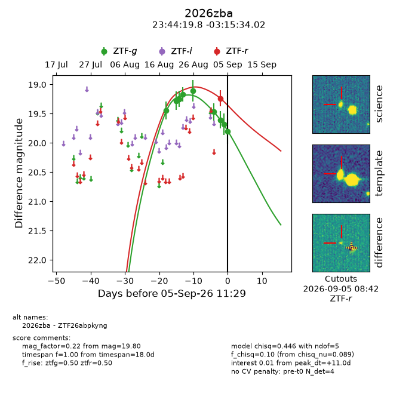
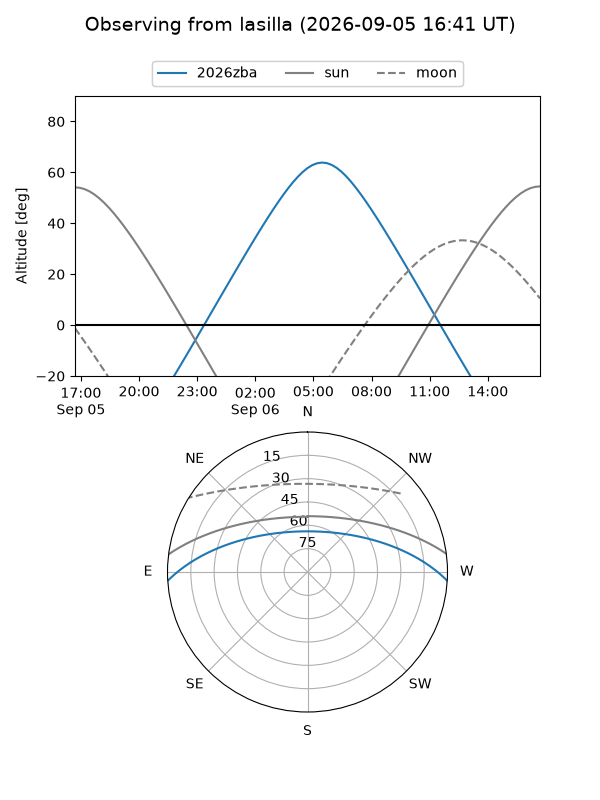
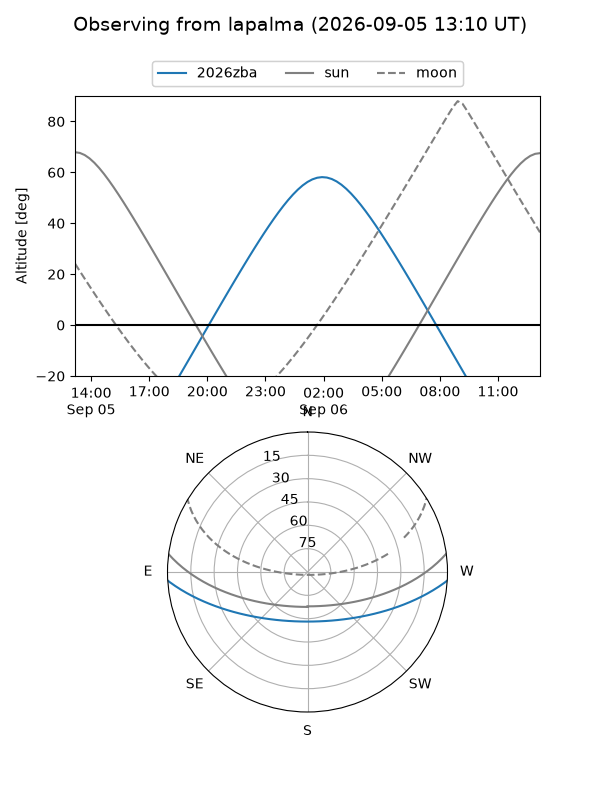
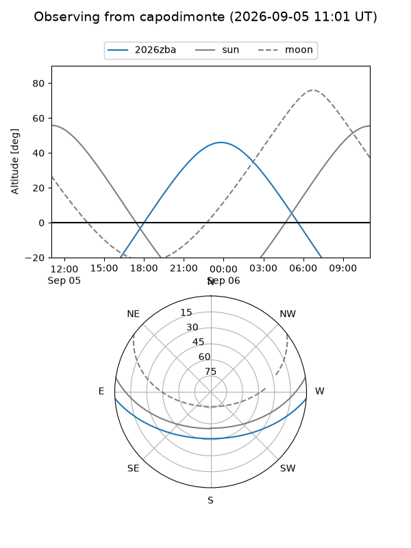
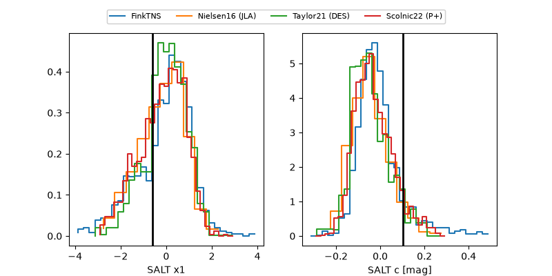

2026zba
Target 2026zba at 2026-09-05 11:31
Aliases and brokers:
FINK-ZTF: ztf.fink-portal.org/ZTF26abpkyng
Lasair-ZTF: lasair-ztf.lsst.ac.uk/objects/ZTF26abpkyng
ALeRCE-ZTF: alerce.online/object/ZTF26abpkyng
YSE-PZ: ziggy.ucolick.org/yse/transient_detail/2026zba
TNS name: wis-tns.org/object/2026zba
Direct TNS query: direct search
alt names
ZTF26abpkyng (ztf,fink_ztf)
2026zba (tns,yse)
Coordinates:
equatorial (ra, dec) = 356.0826,-3.25945
equatorial (HMS+DMS) = 23:44:19.83,-03:15:34.02
galactic (l, b) = (86.1356,-61.24138)
Flags:
TNS type: nan
peak dt: +11.0
Photometry:
last ztfg=19.80, ztfr=19.24
9 ztfg, 1 ztfr detections
Lightcurve

Visibility



Additional plots
